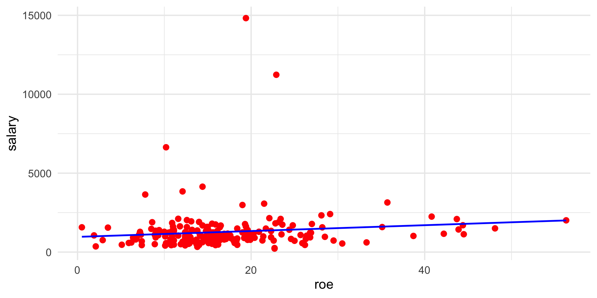
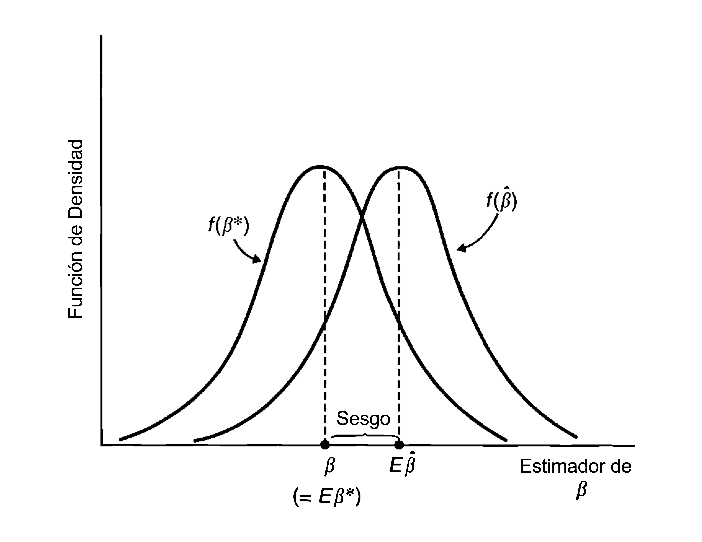
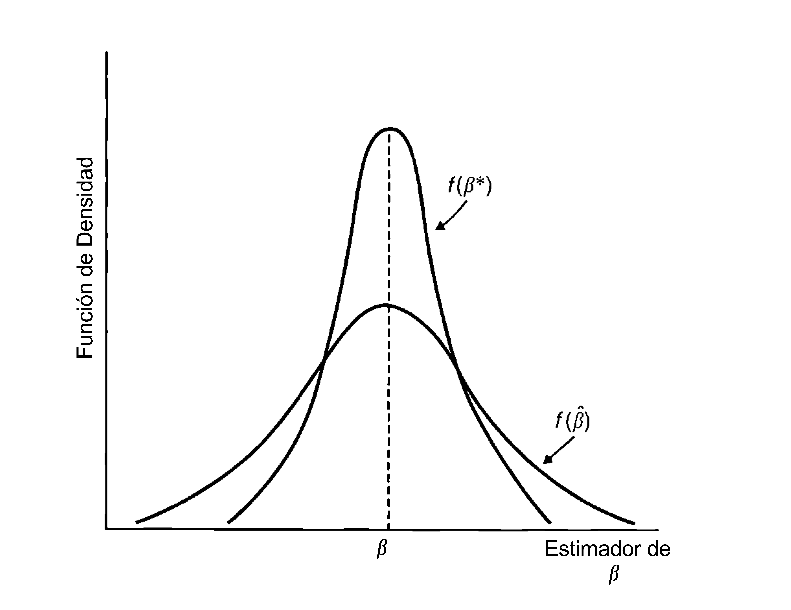
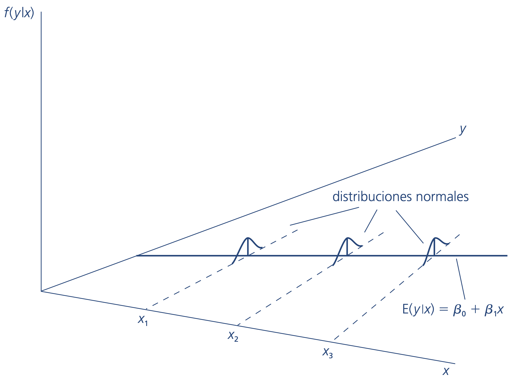
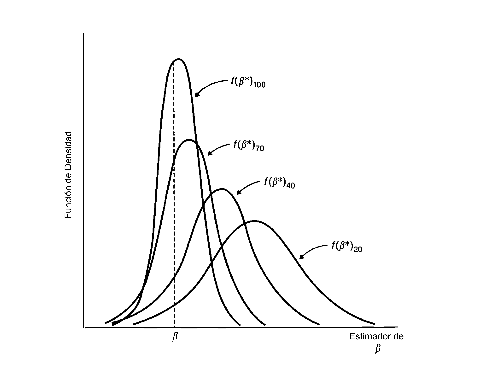
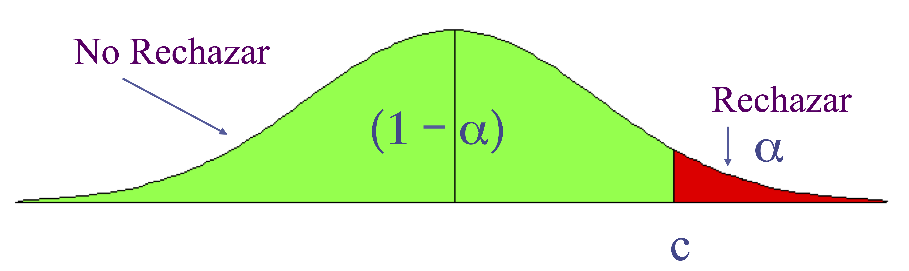
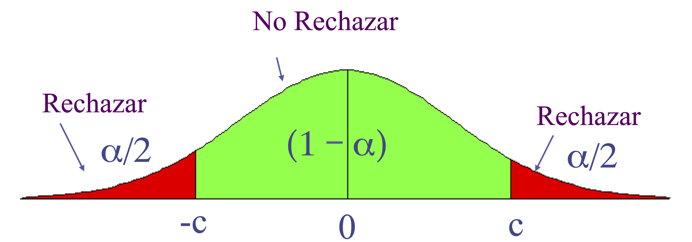
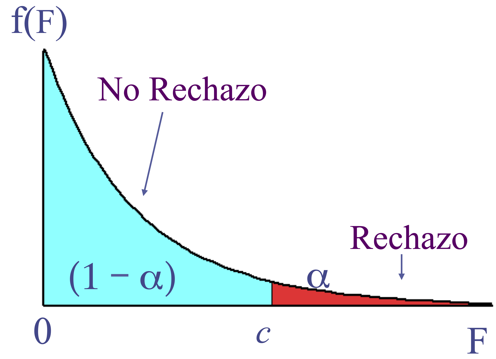
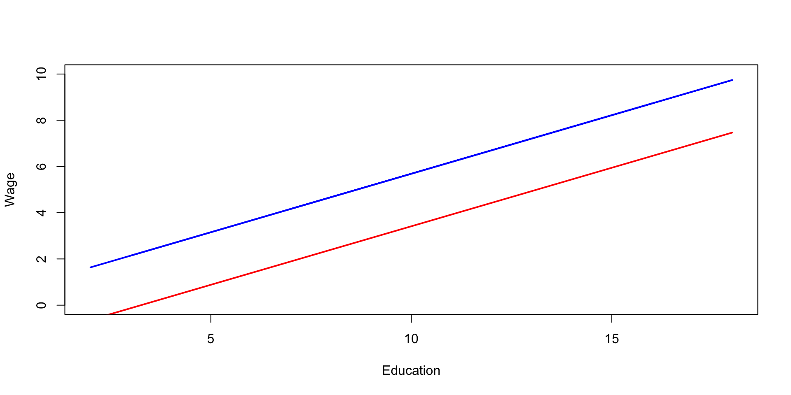
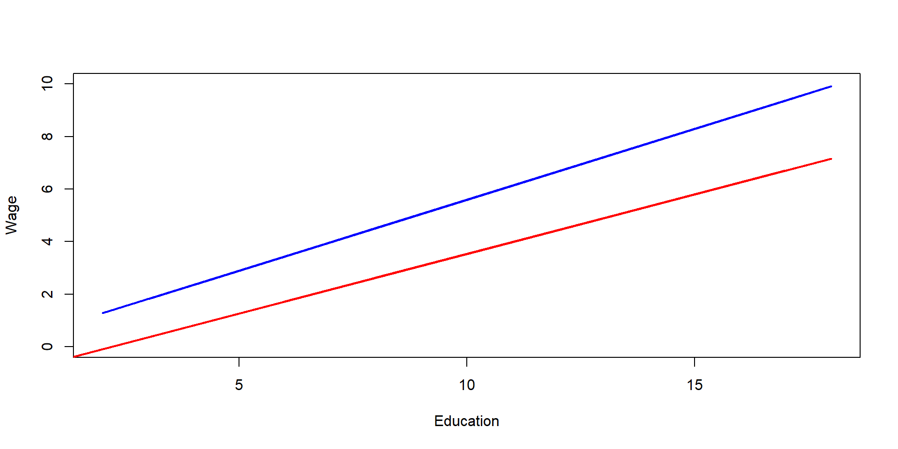

| Param. | Estimado | Err. Est | t | Valor prob. |
|---|---|---|---|---|
| (Intercept) | 963.191 | 213.240 | 4.517 | 0.000 |
| roe | 18.501 | 11.123 | 1.663 | 0.098 |
Econometría II
Unidad 1: Repaso Modelo de Regresión Lineal
Mauricio M. Tejada
Departamento de Economía, Universidad Diego Portales
El modelo de regresión lineal
FRP y supuestos
Función de Regresión Poblacional: \[y_{i}=\beta_{0}+\beta_{1}x_{1i}+\beta_{2}x_{2i}+...+\beta_{K}x_{Ki}+u_{i}\]
Supuestos del Modelo Clásico:
Linealidad en los parámetros.
Muestreo aleatorio.
No hay colinealidad perfecta.
Esperanza condicional cero para el término de error: \[\mathbb{E}[u_{i}|x]=0,\,\,\,\,\,x=x_{1i},x_{2i},...,x_{Ki}\]
Errores no autocorrelacionados y homocedásticos: \[\mathbb{V}(u_{i}|x)=\sigma^{2}\quad\forall i\quad y\quad \mathbb{Cov}(u_{i},u_{j}|x)=0\quad\forall i\neq j\]
Efectos marginales
Diferenciando Totalmente: \[\Delta y=\beta_{1}\Delta x_{1i}+\beta_{2}\Delta x_{2i}+...+\beta_{K}\Delta x_{iK}+\Delta u_{i}\]
\(u_{i}\) representa todos los factores que afectan a \(y_{i}\) distintos de \((x_{1i},...,x_{iK})\)
Efecto marginal (efecto ceteris paribus) de la variable \(k\): \[\Delta u_{i}=\Delta x_{j\neq k,i}=0\rightarrow\frac{\Delta y}{\Delta x_{ki}}=\beta_{k}\quad\forall k=1,...,K\]
Variación total en la variables explicativas (\(\Delta u_{i}=0\)): \[\Delta y=\beta_{1}\Delta x_{1i}+\beta_{2}\Delta x_{2i}+...+\beta_{K}\Delta x_{Ki}\]
Mínimos Cuadrados Ordinarios (MCO)
FRM y efectos marginales en la muestra
Función de Regresión Muestral: \[\widehat{y}_{i}=\widehat{\beta}_{0}+\widehat{\beta}_{1}x_{1i}+\widehat{\beta}_{2}x_{2i}+...+\widehat{\beta}_{K}x_{Ki}\]
Término residual: \[e_{i}=y_{i}-\widehat{y}_{i}\]
Note que \(u_{i}\) y \(e_{i}\) se interpretan de distinta manera.
Interpretación: Efecto marginales estimados a partir de la muestra: \[\Delta x_{j\neq k,i}=0\rightarrow\frac{\Delta\hat{y}}{\Delta x_{ki}}=\hat{\beta}_{k}\quad\forall k=1,...,K\]
MCO y el sistema de ecuaciones normales
Criterio de Mínimos Cuadrados Ordinarios: \[\min\sum_{i=1}^{n}e_{i}^{2}=\min\sum_{i=1}^{n}(y_{i}-\widehat{\beta}_{0}-\widehat{\beta}_{1}x_{1i}-\widehat{\beta}_{2}x_{2i}-...-\widehat{\beta}_{K}x_{Ki})^{2}\]
CPO (sistema de ecuaciones normales, \(K+1\) ecuaciones con \(K+1\) incógnitas): \[\begin{eqnarray*} \frac{\partial SRC}{\widehat{\beta}_{0}} & = & -2\sum_{i=1}^{n}(y_{i}-\widehat{\beta}_{0}-\widehat{\beta}_{1}x_{1i}-\widehat{\beta}_{2}x_{2i}-...-\widehat{\beta}_{K}x_{Ki})=0\\ \frac{\partial SRC}{\widehat{\beta}_{1}} & = & -2\sum_{i=1}^{n}(y_{i}-\widehat{\beta}_{0}-\widehat{\beta}_{1}x_{1i}-\widehat{\beta}_{2}x_{2i}-...-\widehat{\beta}_{K}x_{Ki})x_{1i}=0\\ & \vdots\\ \frac{\partial SRC}{\widehat{\beta}_{K}} & = & -2\sum_{i=1}^{n}(y_{i}-\widehat{\beta}_{0}-\widehat{\beta}_{1}x_{1i}-\widehat{\beta}_{2}x_{2i}-...-\widehat{\beta}_{K}x_{Ki})x_{Ki}=0 \end{eqnarray*}\]
Regresión simple con MCO
Tomemos el caso de dos variables: \[ \widehat{y}_{i}=\widehat{\beta}_{0}+\widehat{\beta}_{1}x_{i} \]
Mínimos Cuadrados Ordinarios: \[ min\sum_{i=1}^{n}e_{i}^{2}=min\sum_{i=1}^{n}(y_{i}-\widehat{\beta}_{0}-\widehat{\beta}_{1}x_{i})^{2} \]
CPO (sistema de ecuaciones normales, \(2\) ecuaciones con \(2\) incógnitas): \[\begin{eqnarray*} \frac{\partial SRC}{\widehat{\beta}_{0}} & = & -2\sum_{i=1}^{n}(y_{i}-\widehat{\beta}_{0}-\widehat{\beta}_{1}x_{i})=0\\ \frac{\partial SRC}{\widehat{\beta}_{1}} & = & -2\sum_{i=1}^{n}(y_{i}-\widehat{\beta}_{0}-\widehat{\beta}_{1}x_{i})x_{i}=0 \end{eqnarray*}\]
Regresión simple con MCO
Estimadores MCO: \[\begin{eqnarray*} \hat{\beta}_{0} & = & \bar{y}-\hat{\beta}_{1}\bar{x}\\ \hat{\beta}_{1} & = & \frac{\sum_{i=1}^{n}(y_{i}-\bar{y})(x_{i}-\bar{x})}{\sum_{i=1}^{n}(x_{i}-\bar{x})^{2}} \end{eqnarray*}\]
- Si en la muestra \(x\) y \(y\) están correlacionadas positivamente (negativamente), \(\hat{\beta}_{1}>0\) (\(\hat{\beta}_{1}<0\)).
- Requerimiento: \(x\) tiene varianza positiva.
Ejemplo 1: Salarios de gerentes y resultados de la firma
Modelo de regresión poblacional: \[salary_i = \beta_0 + \beta_1 roe_i + u_i\]
Usando una muestra de 209 firmas obtenemos:
Ejemplo 1: Salarios de gerentes y resultados de la firma

Implicaciones algebraicas de MCO
La suma de los residuos de MCO es cero: \[\sum_{i=0}^{n}e_{i}=0\]
Ortogonalidad: La covarianza muestral entre \(x\) y \(e\) es cero: \[\sum_{i=1}^{n}x_{ki}e_{i}=0\,\,\,\,k=1,...,K\]
El punto \((\bar{x},\bar{y})\) se encuentra siempre sobre la línea de regresión: \[\bar{y}=\hat{\beta}_{0}+\hat{\beta}_{1}\bar{x}_{1}+...+\hat{\beta}_{K}\bar{x}_{K}\]
Implicaciones algebraicas de MCO
- La media de los valores ajustados \(\widehat{y}\) es igual a la media de los valores observados \(y\): \[\bar{y}=\overline{\widehat{y}}\]
Descuento de efectos parciales (controles)
La función de regresión muestral es: \[ \widehat{y}_{i}=\widehat{\beta}_{0}+\widehat{\beta}_{1}x_{1i}+\widehat{\beta}_{2}x_{2i}+...+\widehat{\beta}_{K}x_{iK} \]
Concentrémonos en \(\hat{\beta}_{1}\). La CPO de MCO es: \[ \sum_{i=1}^{n}(y_{i}-\widehat{\beta}_{0}-\widehat{\beta}_{1}x_{1i}-\widehat{\beta}_{2}x_{2i}-...-\widehat{\beta}_{K}x_{Ki})\left(\hat{x}_{1i}+e_{1i}\right)=0 \] donde los \(e_{1i}\) son los residuos MCO de la regresión \(x_{1i}\) sobre \(x_{2i},...,x_{Ki}\).
Descuento de efectos parciales (controles)
El estimador MCO de \(\beta_1\) es: \[ \hat{\beta}_{1}=\frac{\sum_{i=1}^{n}y_{i}e_{1i}}{\sum_{i=1}^{n}e_{1i}^{2}} \]
Note que:
- \(e_{1i}\): Parte de \(x_{1i}\) no correlacionada con \(x_{2i},...,x_{Ki}\).
- \(\hat{\beta}_{1}\): Relación muestral entre \(y\) y \(x_{1}\) después de descontar (controlar) los efectos de \(x_{2i},...,x_{Ki}\).
Ejemplo 2: Participación en el plan de pensiones
| Param. | Estimado | Err. Est | t | Valor prob. |
|---|---|---|---|---|
| (Intercept) | 83.075 | 0.563 | 147.484 | 0 |
| mrate | 5.861 | 0.527 | 11.121 | 0 |
| Param. | Estimado | Err. Est | t | Valor prob. |
|---|---|---|---|---|
| (Intercept) | 80.119 | 0.779 | 102.846 | 0 |
| mrate | 5.521 | 0.526 | 10.499 | 0 |
| age | 0.243 | 0.045 | 5.440 | 0 |
Ejemplo 2: Participación en el plan de pensiones
| Param. | Estimado | Err. Est | t | Valor prob. |
|---|---|---|---|---|
| (Intercept) | 0.598 | 0.035 | 17.285 | 0 |
| age | 0.010 | 0.002 | 4.682 | 0 |
| Param. | Estimado | Err. Est | t | Valor prob. |
|---|---|---|---|---|
| (Intercept) | 87.363 | 0.413 | 211.655 | 0 |
| err_mrate | 5.521 | 0.533 | 10.350 | 0 |
Bondad de ajuste
Bondad de ajuste
Recordemos que: \[y_i = \widehat{y}_{i} + e_i\]
Note que \(STC=SEC+SRC\): \[ \sum_{i=1}^{n}(y_{i}-\overline{y})^{2}=\sum_{i=1}^{n}(\widehat{y}_{i}-\overline{y})^{2}+\sum_{i=1}^{n}e_{i}^{2} \]
La bondad de ajuste se puede medir entonces como: \[ R^{2}=\frac{\sum_{i=1}^{n}(\widehat{y}_{i}-\overline{y})^{2}}{\sum_{i=1}^{n}(y_{i}-\overline{y})^{2}}=1-\frac{\sum_{i=1}^{n}e_{i}^{2}}{\sum_{i=1}^{n}(y_{i}-\overline{y})^{2}} \]
Bondad de ajuste
Comentarios:
- \(0\leq R^{2}\leq1\).
- \(R^{2}\) es no decreciente en el número de variables explicativas incluidas en el modelo.
- \(\widehat{\beta}\) maximiza \(R^{2}\).
- \(R^{2}\) es igual al cuadrado del coeficiente de correlación muestral entre \(y\) y \(\hat{y}\).
Propiedades del estimador MCO
Propiedades en muestras pequeñas
- Insesgamiento
- Bajo los supuestos (1) a (4): \[\mathbb{E}\left[\widehat{\beta}_{k}|x_{1i},...,x_{Ki}\right]=\beta_{k}\Rightarrow \mathbb{E}\left[\widehat{\beta}_{k}\right]=\beta_{k}\,\,\,\,k=0,1,...,K\] para cualquier valor del parámetro poblacional \(k\). En otras palabras, los estimadores de MCO son estimadores insesgados de los parámetros poblacionales.
Propiedades en muestras pequeñas
Insesgamiento: Considere los estimadores \(\beta^*\) y \(\hat{\beta}\):

Propiedades en muestras pequeñas
Bajo los supuesto (1) a (5): \[ \mathbb{V}(\hat{\beta}_{k}|x)=\frac{\sigma^{2}}{\sum_{i=1}^{n}(x_{ki}-\bar{x}_{k})^{2}(1-R_{k}^{2})} \] donde \(R_{k}^{2}\) es el \(R^{2}\) de la regresión de \(x_{k}\) sobre todas las otras variables independientes (e incluyendo un intercepto).
- Más ruido en la ecuación (una \(\sigma^{2}\) más grande) dificulta más estimar \(\hat{\beta}_{k}\) de forma precisa.
- Menor variación muestral en \(x_{k}\) hace más difícil estimar \(\hat{\beta}_{k}\) de forma precisa.
- Si \(x_{k}\) y las otras variables explicativas están fuertemente correlacionadas (colinealidad), \(R_{k}^{2}\rightarrow1\), se hace más difícil estimar \(\hat{\beta}_{k}\) de forma precisa.
Propiedades en muestras pequeñas
- Teorema de Gauss-Markov
- Bajo los supuestos (1) a (5), \(\hat{\beta_{0}}\), \(\hat{\beta}_{1}\), …, y \(\hat{\beta}_{K}\) son los mejores estimadores lineales insesgados (MELI) de \(\beta_{0}\), \(\beta_{1}\), …, y \(\beta_{K}\) respectivamente.
Tomemos el siguiente estimador: \[ \tilde{\beta}_{k}=\sum_{i=1}^{n}w_{ki}y_{i} \] donde cada \(w_{ki}\) es una función de los \(x_{1i}\), \(x_{2i}\), …,\(x_{K1}\). Se cumple que: \[ \mathbb{V}(\hat{\beta}_{k}|x)\leq \mathbb{V}(\tilde{\beta}_{k}|x) \]
El estimador MCO es eficiente.
Propiedades en muestras pequeñas
Eficiencia: Considere nuevamente los estimadores \(\beta^*\) y \(\hat{\beta}\):

Propiedades en muestras pequeñas
Supuesto adicional:
- El error poblacional \(u_{i}\) es independiente de las variables explicativas y está distribuido normalmente, con media cero y varianza \(\sigma^{2}\): \(u\sim N(0,\sigma^{2})\).

Propiedades en muestras pequeñas
- Distribución Muestral de los Parámetros
- Bajo los supuestos (1) a (6) del MLC: \(\hat{\beta}_{k}|x\sim N\left(\beta_{k},\mathbb{V}(\hat{\beta}_{k}|x)\right)\) Por lo tanto: \[\frac{\hat{\beta}_{k}-\beta_{k}}{\sqrt{\mathbb{V}(\hat{\beta}_{k}|x)}}|x\sim N\left(0,1\right)\]
Propiedades asintóticas
Bajo los supuestos 1 a 5 MCO es insesgados y eficiente. Estas son propiedades en muestras finitas.
Bajo los supuestos 1 a 6 los estimadores de MCO tienen una distribución normal.
Los estimadores MCO también tienen propiedades asintóticas (\(n\rightarrow\infty\)): consistencia.
En algunos casos, algún estimador podría ser sesgado pero si la muestra se aproxima al infinito éste debiera ser consistente. Consistencia es un requisito mínimo para un estimador.
Propiedades asintóticas
- Consistencia
- Sea \(\hat{\beta}_{j}\) un estimador de para una muestra de tamaño \(n\). \(\hat{\beta}_{j}\) es un estimador consistente si para todo \(\epsilon>0\), \(\Pr[|\hat{\beta}_{j}-\beta_{j}|>\epsilon]\rightarrow0\) cuando \(n\rightarrow\infty\). Alternativamente, se dice también que \(\beta_{j}\) es el límite en probabilidad de \(\hat{\beta}_{j}\), \(plim(\hat{\beta}_{j})=\beta_{j}\).
Intuición:
Sea \(\hat{\beta}_{j}\) el estimador MCO de \(\beta_{j}\). Para cada \(n\), \(\hat{\beta}_{j}\) tiene una distribución de probabilidad.
Si \(\hat{\beta}_{j}\) es consistente, a medida que \(n\rightarrow\infty\) esta distribución se estrechará cada vez más alrededor de \(\beta_{j}\). Entonces: \(\hat{\beta}_{j}\) estará arbitrariamente cerca de \(\beta_{j}\).
Propiedades asintóticas
Consistencia: Considere el estimador \(\beta^*\) bajo distintos tamaños de muestra:

Propiedades asintóticas
Vamos a requerir algunos conceptos de la estadística en muestras grandes.
- Ley de los Grandes Números
- Sean \(Y_{1},...,Y_{N}\) variable aleatorias i.i.d. con media \(\mathbb{E}[Y]=\mu\).Entonces: \[plim\left(\frac{1}{N}\sum_{i=1}^{N}Y_{i}\right)=\mathbb{E}[Y]=\mu\]
Propiedades de los \(plim\):
- \(plim\,g(\beta)=g(plim\,\beta)\)
- \(plim\left(\beta_{1}+\beta_{2}\right)=plim\,\beta_{1}+plim\,\beta_{2}\)
- \(plim\left(\beta_{1}\times\beta_{2}\right)=plim\,\beta_{1}\times plim\,\beta_{2}\)
- \(plim\left(\beta_{1}/\beta_{2}\right)=plim\,\beta_{1}/plim\,\beta_{2}\)
Propiedades asintóticas
- El estimador de MCO para el modelo de regresión simple es: \[\hat{\beta_{1}}=\frac{\sum_{i=1}^{N}y_{i}(x_{1i}-\bar{x}_{1})}{\sum_{i=1}^{N}(x_{1i}-\bar{x}_{1})^{2}}\]
- Bajo el mismo procedimiento usado para mostrar insesgamiento: \[\hat{\beta_{1}}=\beta_{1}+\frac{\frac{1}{n}\sum_{i=1}^{N}(x_{1i}-\bar{x}_{1})u_{i}}{\frac{1}{n}\sum_{i=1}^{N}(x_{1i}-\bar{x}_{1})^{2}}\]
Propiedades asintóticas
- Bajo los supuestos 1 a 4, el estimador MCO es consistente: \[plim\,\hat{\beta}_{1}=\beta_{1}+\frac{\mathbb{Cov}(e_{1},u)}{\mathbb{V}(e_{1})}=\beta_{1}\,\,\,dado\ ,\mathbb{Cov}(x,u)=0\]
La clave para consistencia es \(\mathbb{Cov}(x,u)=0\). De hecho podemos sustituir el supuesto \(\mathbb{E}[u|x]=0\) por \(\mathbb{E}[u]=0\) y \(\mathbb{Cov}(x,u)=0\) (que es más débil).
Inferencia
Inferencia
Recordemos que:
- Distribución Muestral de los Parámetros
- Bajo los supuestos (1) a (6) del MLC: \(\hat{\beta}_{k}|x\sim N\left(\beta_{k},\mathbb{V}(\hat{\beta}_{k}|x)\right)\) Por lo tanto: \[\frac{\hat{\beta}_{k}-\beta_{k}}{\sqrt{\mathbb{V}(\hat{\beta}_{k}|x)}}|x\sim N\left(0,1\right)\]
Estimación de \(\sigma^{2}\): \(s^{2}=\frac{1}{n-K-1}\sum_{i=1}^{n}e_{i}^{2}\)
Entonces: \[\widehat{\mathbb{V}}(\hat{\beta}_{k}|x)=\frac{s^{2}}{\sum_{i=1}^{n}(x_{ki}-\bar{x}_{k})^{2}(1-R_{k}^{2})}\]
Inferencia: Test t
Tenemos que: \[\widehat{\beta}_{k}\sim N(\beta_{k},\mathbb{V}(\widehat{\beta}_{k}|x))\]
\(\sigma^{2}\) conocido: \(z=\frac{\widehat{\beta}_{k}-\beta_{k}}{\sqrt{\mathbb{V}(\widehat{\beta}_{k}|x)}}\sim N(0,1)\)
\(\sigma^{2}\) desconocido: \(t=\frac{\widehat{\beta}_{k}-\beta_{k}}{\sqrt{\widehat{\mathbb{V}}(\widehat{\beta}_{k}|x)}}\sim t_{n-K-1}\)
El primer paso es definir la hipótesis nula: \[H_{0}:\beta_{k}=\beta_{k}^{o}\]
Inferencia: Test t
El estadístico \(t\) bajo la hipótesis nula : \[ t=\frac{\widehat{\beta}_{k}-\beta_{k}^{o}}{\sqrt{\widehat{\mathbb{V}}(\widehat{\beta}_{k}|x)}} \]
Ademas es necesario definir una hipótesis alternativa, \(H_{1}\), y el nivel de significancia \(\alpha\).
- \(H_{1}\) puede ser de una o dos colas.
- \(H_{1}:\beta_{k}>\beta_{k}^{o}\) y \(H_{1}:\beta_{k}<\beta_{k}^{o}\) son de una cola.
- \(H_{1}:\beta_{k}\neq\beta_{k}^{o}\) es de dos colas.
Inferencia: Test t
Si queremos \(\Pr[Escoger\,H_{1}|H_{0}\,Cierta]=5\%\) decimos que el nivel de significancia es 5% (\(\alpha=0.05\)).
| \(H_{0}\) Cierta | \(H_{1}\) Cierta | |
|---|---|---|
| Se Escoge \(H_{0}\) | No Error (verd +) | Error Tipo II (\(\beta\)) |
| Se Escoge \(H_{1}\) | Error Tipo I (\(\alpha\)) | No Error (verd -) |
Inferencia: Test t
Prueba de una cola: \(H_{0}:\beta_{k}=\beta_{k}^{o}\) y \(H_{1}:\beta_{k}>\beta_{k}^{o}\)

Inferencia: Test t
Prueba de dos colas: \(H_{0}:\beta_{k}=\beta_{k}^{o}\) y \(H_{1}:\beta_{k}\neq\beta_{k}^{o}\)

Inferencia: Estimación por intervalo
Usando el hecho que: \[\frac{\widehat{\beta}_{k}-\beta_{k}}{\sqrt{\widehat{\mathbb{V}}(\widehat{\beta}_{k}|x)}}\sim t_{n-K-1}\]
tenemos que: \[\Pr\left[-t_{\alpha/2,n-K-1}\leq\frac{\widehat{\beta}_{k}-\beta_{k}}{\sqrt{\widehat{\mathbb{V}}(\widehat{\beta}_{k}|x)}}\leq t_{\alpha/2,n-K-1}\right]=1-\alpha\]
Inferencia: Estimación por intervalo
Mediante manipulaciones algebraicas obtenemos: \[\Pr\left[\widehat{\beta}_{k}-t_{\alpha/2,n-K-1}\sqrt{\widehat{\mathbb{V}}(\widehat{\beta}_{k}|x)}\leq\beta_{k}\leq\widehat{\beta}_{k}+t_{\alpha/2,n-K-1}\sqrt{\widehat{\mathbb{V}}(\widehat{\beta}_{k}|x)}\right]=1-\alpha\]
Estimación por intervalo: \[\widehat{\beta}_{k}\pm t_{\alpha/2,n-K-1}\sqrt{\widehat{\mathbb{V}}(\widehat{\beta}_{k}|x)}\]
Inferencia: Restricciones lineales
Ejemplo: \[H_{0}:\beta_{1}-\beta_{2}=0\]
Estadístico \(t\):
\[t=\frac{(\widehat{\beta}_{1}-\widehat{\beta}_{2})-(\beta_{1}^{o}-\beta_{2}^{o})}{\sqrt{\widehat{\mathbb{V}}(\widehat{\beta}_{1}-\widehat{\beta}_{2})}}=\frac{(\widehat{\beta}_{1}-\widehat{\beta}_{2})}{\sqrt{\widehat{\mathbb{V}}(\widehat{\beta}_{1}-\widehat{\beta}_{2})}}\sim t_{n-K-1}\]
Note que: \[\widehat{\mathbb{V}}(\widehat{\beta}_{1}-\widehat{\beta}_{2})=\widehat{\mathbb{V}}(\widehat{\beta}_{1})+\widehat{\mathbb{V}}(\widehat{\beta}_{2})-2\widehat{\mathbb{Cov}}(\widehat{\beta}_{1},\widehat{\beta}_{2})\]
Inferencia: Test de exclusión de variables
Tenemos la siguiente hipótesis nula (significancia global): \[H_{0}:\beta_{1}=\beta_{2}=...=\beta_{K}=0\]
El test se realiza comparando el modelo irrestricto con el modelo restringido. Se usa el estadístico \(F\): \[F=\frac{(SRC_{R}-SRC_{NR})/q}{SRC_{NR}/n-K-1}\sim F_{q,n-K-1}\]

Ejemplo 3: Determinantes de las notas en la universidad
| Param. | Estimado | Err. Est | t | Valor prob. |
|---|---|---|---|---|
| (Intercept) | 1.390 | 0.332 | 4.191 | 0.000 |
| hsGPA | 0.412 | 0.094 | 4.396 | 0.000 |
| ACT | 0.015 | 0.011 | 1.393 | 0.166 |
| skipped | -0.083 | 0.026 | -3.197 | 0.002 |
Ejemplo 3: Determinantes de las notas en la universidad
- Test de significancia global
Linear hypothesis test
Hypothesis:
hsGPA = 0
ACT = 0
skipped = 0
Model 1: restricted model
Model 2: colGPA ~ hsGPA + ACT + skipped
Res.Df RSS Df Sum of Sq F Pr(>F)
1 140 19.406
2 137 14.873 3 4.5331 13.919 5.653e-08 ***
---
Signif. codes: 0 '***' 0.001 '**' 0.01 '*' 0.05 '.' 0.1 ' ' 1Ejemplo 3: Determinantes de las notas en la universidad
- Test de restricciones lineales
Linear hypothesis test
Hypothesis:
hsGPA - ACT = 0
Model 1: restricted model
Model 2: colGPA ~ hsGPA + ACT + skipped
Res.Df RSS Df Sum of Sq F Pr(>F)
1 138 16.656
2 137 14.873 1 1.7834 16.427 8.433e-05 ***
---
Signif. codes: 0 '***' 0.001 '**' 0.01 '*' 0.05 '.' 0.1 ' ' 1Variables dummy
Información cualitativa
En muchos contextos la información describe de forma binaria una cualidad: género, raza, pertenencia un sindicato, cotiza o no al sistema de pensiones, etc.
Esta información se captura con una variable dummy (también denominada cero-uno, para enfatizar que toma dos valores).
Ejemplo: para indicar género, mujer toma el valor 1 y hombre cero (nota: elegir un nombre que sea descriptivo de la categoría que toma el valor 1).
Variables dummy en el contexto de regresión simple
- Considere el modelo de regresión poblacional: \[y_i=\beta_0+\delta_0 d_i + u_i\] con \(d_i\) una variable dummy. Por ejemplo: \(y=salario\) y \(d=mujer\).
- Suponemos que se cumple el supuesto \(E[u_i|d_i]=0\) y por tanto: \[E[y_i|d_i]=\beta_0+\delta_0 d_i\]
- ¿Qué interpretación tiene \(\delta_0\)?
Variables dummy en el contexto de regresión simple
Como \(d_i\) toma sólo dos valores tenemos: \[\begin{eqnarray*} E[y_i|d_i=1]&=&\beta_0+\delta_0 \\ E[y_i|d_i=0]&=&\beta_0 \end{eqnarray*}\] por tanto: \[\delta_0 = E[y_i|d_i=1]- E[y_i|d_i=0]\]
\(\delta_0\) no es una pendiente, es la diferencia de los promedios de \(y\) para los dos grupos.
Ejemplo 4: Diferencias salariales por género
# A tibble: 10 × 7
wage educ exper tenure nonwhite female married
<dbl> <dbl> <dbl> <dbl> <dbl> <dbl> <dbl>
1 3.10 11 2 0 0 1 0
2 3.24 12 22 2 0 1 1
3 3 11 2 0 0 0 0
4 6 8 44 28 0 0 1
5 5.30 12 7 2 0 0 1
6 8.75 16 9 8 0 0 1
7 11.2 18 15 7 0 0 0
8 5 12 5 3 0 1 0
9 3.60 12 26 4 0 1 0
10 18.2 17 22 21 0 0 1Ejemplo 4: Diferencias salariales por género
- Estimamos el el modelo \(wage = \beta_0+\delta_0 female + u\):
| Param. | Estimado | Err. Est | t | Valor prob. |
|---|---|---|---|---|
| (Intercept) | 7.099 | 0.210 | 33.806 | 0 |
| female | -2.512 | 0.303 | -8.279 | 0 |
- Las mujeres gana en promedio 2.5 dólares por hora menos. Obtenemos estos resultados calculando los promedios salariales de hombres y mujeres:
female wage
1 0 7.099489
2 1 4.587659- Efectivamente \(7.09-4.58 = -2.51\).
Variables dummy en el contexto de regresión múltiple
Considere el modelo de regresión poblacional: \[y_i=\beta_0+\beta_1 x_i + \delta_0 d_i + u_i\] Por ejemplo: \(y=salario\), \(x=educ\) y \(d=mujer\).
¿Qué interpretación tiene \(\delta_0\) en este contexto? \[\begin{eqnarray*} E[y_i|x_i,d_i=1]&=&\beta_0+\delta_0 + \beta_1 x_i \\ E[y_i|x_i,d_i=0]&=&\beta_0 + \beta_1 x_i \end{eqnarray*}\]
Variables dummy en el contexto de regresión múltiple
Al igual que antes: \[\delta_0 = E[y_i|x_i,d_i=1]- E[y_i|x_i,d_i=0]\] para cualquier nivel de \(x_i\).
Dos comentarios:
- Note que ahora el estimador de \(\delta_0\) descontará la correlación entre \(d_i\) y \(x_i\).
- También \(\delta_0\) representa la diferencia de interceptos en la función de esperanza condicional.
Ejemplo 4: Diferencias salariales por género
- Estimamos el modelo \(wage = \beta_0+\beta_1 educ + \delta_0 female + u\):
| Param. | Estimado | Err. Est | t | Valor prob. |
|---|---|---|---|---|
| (Intercept) | 0.623 | 0.673 | 0.926 | 0.355 |
| educ | 0.506 | 0.050 | 10.051 | 0.000 |
| female | -2.273 | 0.279 | -8.147 | 0.000 |
Después de controlar por educación, las mujeres ganan en promedio 2.3 dólares por hora menos que los hombres.
Ahora graficamos las funciones de esperanza condicional para hombres y mujeres.
Ejemplo 4: Diferencias salariales por género

Variables dummy en el contexto de regresión múltiple
Considere el modelo de regresión poblacional con un término de interacción: \[y_i=\beta_0+\beta_1 x_i + \delta_0 d_i + \delta_1 d_1 x_i + u_i\] Por ejemplo: \(y=salario\), \(x=educ\) y \(d=mujer\).
¿Qué interpretación tienen \(\delta_0\)y \(\delta_1\) en este contexto? \[\begin{eqnarray*} E[y_i|x_i,d_i=1]&=&(\beta_0+ \delta_0) + (\beta_1 + \delta_1)x_i \\ E[y_i|x_i,d_i=0]&=&\beta_0 + \beta_1 x_i \end{eqnarray*}\]
Variables dummy en el contexto de regresión múltiple
Ahora tenemos: \[E[y_i|x_i,d_i=1]- E[y_i|x_i,d_i=0]=\delta_0 + \delta_1 x_i\] esto es la diferencia de promedios depende de \(x_i\).
\(\delta_0\) representa la diferencia de interceptos en la función de esperanza condicional, mientras que \(\delta_1\) representa la diferencia de pendientes en dicha función.
Ejemplo 4: Diferencias salariales por género
- Estimamos \(wage = \beta_0+\beta_1 educ + \delta_0 female + \delta_1 female \times educ + u\):
| Param. | Estimado | Err. Est | t | Valor prob. |
|---|---|---|---|---|
| (Intercept) | 0.200 | 0.844 | 0.238 | 0.812 |
| educ | 0.539 | 0.064 | 8.400 | 0.000 |
| female | -1.199 | 1.325 | -0.905 | 0.366 |
| educ:female | -0.086 | 0.104 | -0.830 | 0.407 |
- Las mujeres sin educación \(educ=0\) ganan en promedio 1.2 dólares por hora menos que los hombres. A medida que aumenta la educación, este promedio se reduce en -0.086.
Ejemplo 4: Diferencias salariales por género

Violaciones a los supuestos del modelo clásico de regresión
Comentarios sobre violaciones a los supuestos del modelo clásico
\(\mathbb{E}[u|x] \neq 0\) genera sesgo en muestras pequeñas e inconsistencia en muestras grandes. Ocurre debido a:
- Endogeneidad: \(y \longleftrightarrow x\) (simultaneidad).
- Variable relevante \(z\) omitida cuando \(\mathbb{Cov}(x,z) \neq 0\).
- Error de medida en variable independiente: \(x^{obs} = x + \epsilon\)
Medidas remediales: variables instrumentales, datos de panel, modelar explícitamente el error de medida.
Comentarios sobre violaciones a los supuestos del modelo clásico
\(\mathbb{V}(u_i) = \sigma_i\) y/o \(\mathbb{Cov}(u_i,u_j) \neq 0\) para \(i \neq j\) generan ineficiencia y los estimadores MCO de los errores estándar son incorrectos.
- Heteroscedasticidad.
- Autocorrelación.
Medidas remediales: Mínimos cuadrados generalizados (factibles).
Variables instrumentales
Variable intrumental
Considere el siguiente modelo de regresión simple: \[y_{i}=\beta_{0}+\beta_{1} x_{i}+u_{i}\]
- Sabemos que \(\mathbb{Cov}(u_i,x_i)\neq0\), entonces el estimador MCO es inconsistente.
La regresión de VI:
Separar \(x\) en dos partes: la parte correlacionada con \(u_{i}\) y la parte no correlacionada.
Esto se logra mediante una variable instrumental, \(z_{i}\) correlacionada con \(x_{i}\) pero no correlacionada con \(u_{i}\)
Dos condiciones para un instrumento válido
Para que una variable instrumental (un “instrumento”) \(z\) para \(x\) sea válido, ésta debe cumplir dos condiciones:
Relevancia del instrumento: \(\mathbb{Corr}\left(z_{i}, x_{i}\right) \neq 0\)
Exogeneidad del instrumento: \(\mathbb{Corr}\left(z_{i}, u_{i}\right)=0\)
Supongamos por ahora que existe tal \(z_{i}\) ¿Cómo podemos usar \(z_{i}\) para estimar \(\beta_{1}\)?
- Mínimos cuadrados de dos etapas (MCDE)
El estimador VI con un \(x\) y un \(z\)
MCDE tiene dos etapas: dos regresiones:
- Aísle la parte de \(x\) que no está correlacionada con \(u\) realizando una regresión MCO entre \(x\) en \(z\):
\[x_{i}=\pi_{0}+\pi_{1} z_{i}+v_{i}\]
Como \(z_{i}\) no está correlacionada con \(u_{i}, \pi_{0}+\pi_{1} z_{i}\) no está correlacionada con \(u_{i}\).
Calcule los valores predichos de \(x_{i}\), donde \(\hat{x}_{i}=\hat{\pi}_{0}+\hat{\pi}_{1} z_{i}\).
El estimador VI con un \(x\) y un \(z\) (cont…)
- Reemplace \(x_{i}\) por \(\hat{x}_{i}\) en la regresión de interés y use MCO para estimar los parámetros:
\[y_{i}=\beta_{0}+\beta_{1} \hat{x}_{i}+u_{i}\]
Como \(\hat{x}_{i}\) no esta correlacionada con \(u_{i}\), los supuestos del modelo clásico y las propiedades deseables de MCO se cumplen.
El estimador resultante es conocido como el estimador de mínimos cuadrados en dos etapas (MCDE): \(\hat{\beta}_{1}^{MCDE}\).
\(\hat{\beta}_{1}^{MCDE}\) es un estimador consistente de \(\beta_{1}\).
Ingeniería Comercial – Econometría II